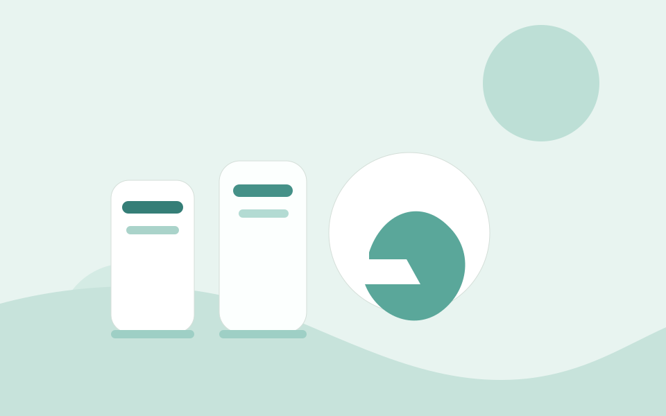
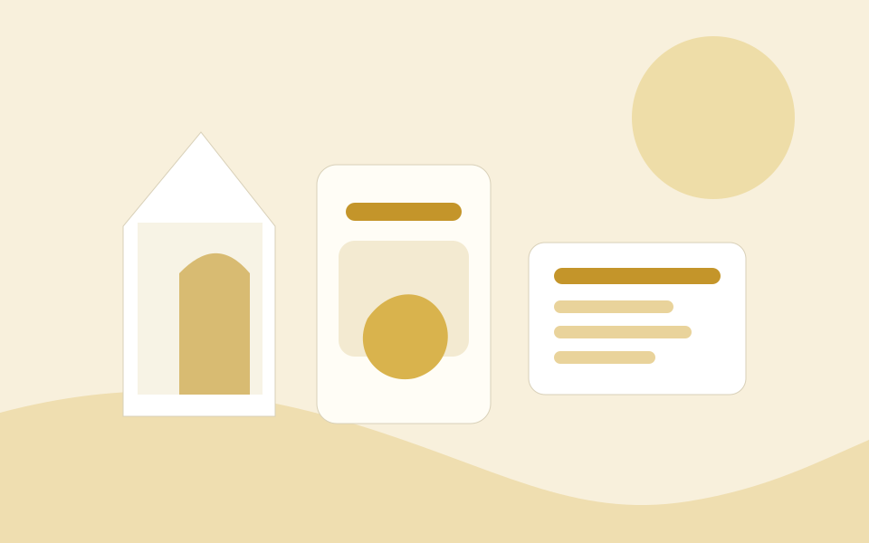
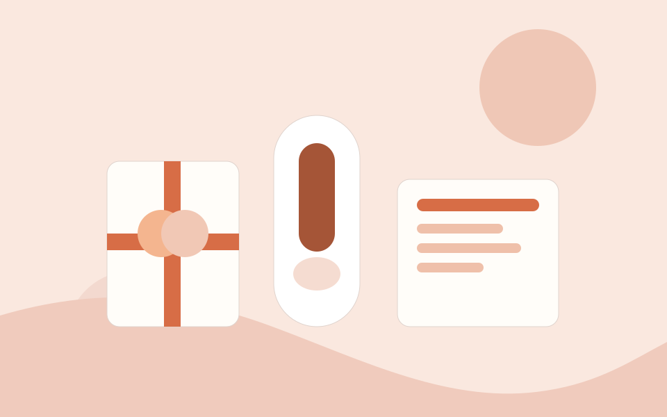
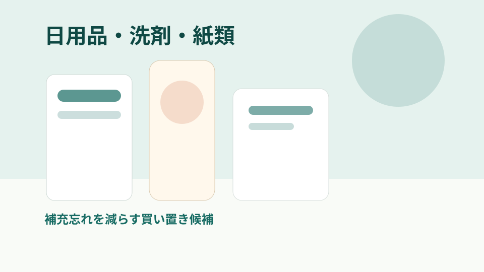
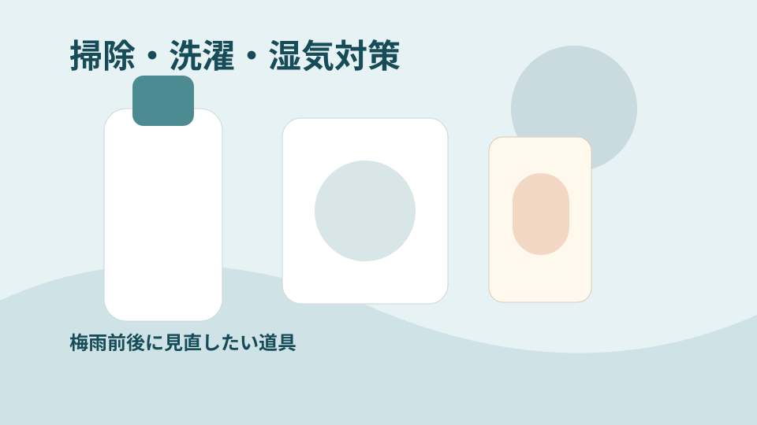
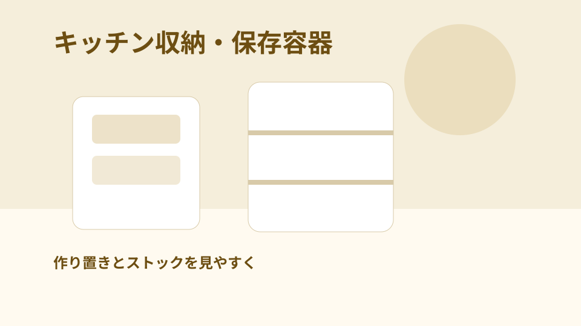
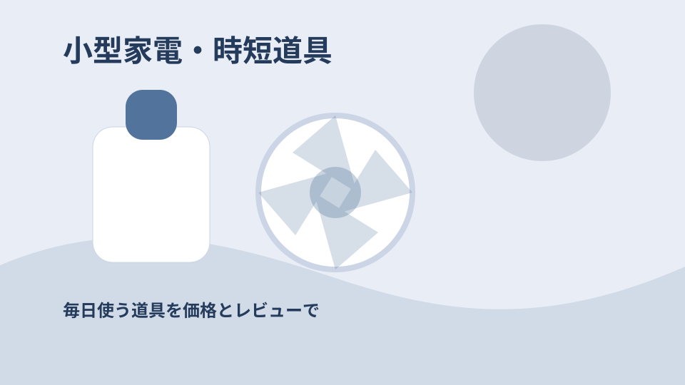
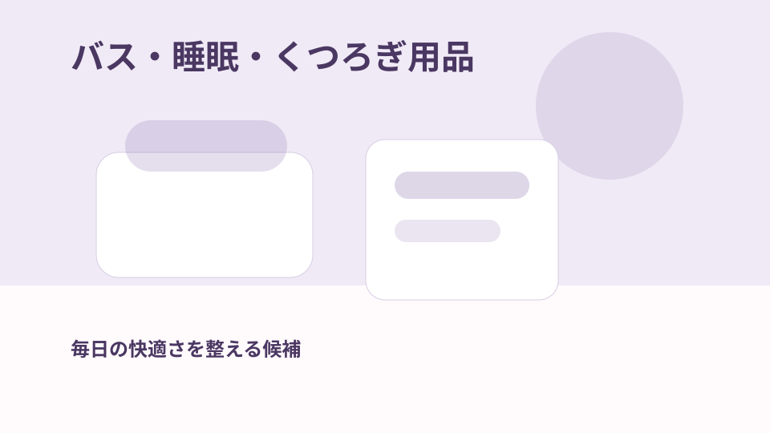

![強炭酸水 500ml 48本 まとめ買い](data:image/svg+xml;charset=UTF-8,%0A%20%20%20%20%3Csvg%20xmlns%3D%22http%3A%2F%2Fwww.w3.org%2F2000%2Fsvg%22%20width%3D%22720%22%20height%3D%22540%22%20viewBox%3D%220%200%20720%20540%22%3E%0A%20%20%20%20%20%20%3Crect%20width%3D%22720%22%20height%3D%22540%22%20fill%3D%22%23dff1eb%22%2F%3E%0A%20%20%20%20%20%20%3Ccircle%20cx%3D%22602%22%20cy%3D%2296%22%20r%3D%2284%22%20fill%3D%22%231e726a%22%20opacity%3D%220.16%22%2F%3E%0A%20%20%20%20%20%20%3Ccircle%20cx%3D%22110%22%20cy%3D%22438%22%20r%3D%22116%22%20fill%3D%22%231e726a%22%20opacity%3D%220.10%22%2F%3E%0A%20%20%20%20%20%20%3Cpath%20d%3D%22M0%20428%20C120%20360%2C%20270%20356%2C%20420%20418%20S650%20500%2C%20720%20448%20V540%20H0%20Z%22%20fill%3D%22%231e726a%22%20opacity%3D%220.18%22%2F%3E%0A%20%20%20%20%20%20%3Crect%20x%3D%2242%22%20y%3D%2242%22%20width%3D%22236%22%20height%3D%2242%22%20rx%3D%2221%22%20fill%3D%22%23ffffff%22%20opacity%3D%220.92%22%2F%3E%0A%20%20%20%20%20%20%3Ctext%20x%3D%2264%22%20y%3D%2269%22%20font-family%3D%22Segoe%20UI%2C%20sans-serif%22%20font-size%3D%2222%22%20font-weight%3D%22700%22%20fill%3D%22%231e726a%22%3E%E6%B0%B4%E3%83%BB%E7%82%AD%E9%85%B8%E6%B0%B4%E3%83%BB%E3%81%8A%E8%8C%B6%E3%81%AE%E3%81%BE%E3%81%A8%E3%82%81%E8%B2%B7%E3%81%84%3C%2Ftext%3E%0A%20%20%20%20%20%20%3Ctext%20x%3D%2250%22%20y%3D%22246%22%20font-family%3D%22Segoe%20UI%2C%20sans-serif%22%20font-size%3D%2242%22%20font-weight%3D%22800%22%20fill%3D%22%230f5b54%22%3E%E5%BC%B7%E7%82%AD%E9%85%B8%E6%B0%B4%20500ml%2048%E6%9C%AC%20%E3%81%BE%E3%81%A8%E3%82%81%E8%B2%B7%E3%81%84%3C%2Ftext%3E%0A%20%20%20%20%20%20%3Ctext%20x%3D%2250%22%20y%3D%22302%22%20font-family%3D%22Segoe%20UI%2C%20sans-serif%22%20font-size%3D%2220%22%20fill%3D%22%230f5b54%22%20opacity%3D%220.72%22%3ESample%20preview%3C%2Ftext%3E%0A%20%20%20%20%20%20%3Crect%20x%3D%2250%22%20y%3D%22350%22%20width%3D%22150%22%20height%3D%2218%22%20rx%3D%229%22%20fill%3D%22%231e726a%22%20opacity%3D%220.72%22%2F%3E%0A%20%20%20%20%20%20%3Crect%20x%3D%2250%22%20y%3D%22382%22%20width%3D%22220%22%20height%3D%2218%22%20rx%3D%229%22%20fill%3D%22%231e726a%22%20opacity%3D%220.35%22%2F%3E%0A%20%20%20%20%20%20%3Crect%20x%3D%2250%22%20y%3D%22414%22%20width%3D%22180%22%20height%3D%2218%22%20rx%3D%229%22%20fill%3D%22%231e726a%22%20opacity%3D%220.2%22%2F%3E%0A%20%20%20%20%3C%2Fsvg%3E)
水・炭酸水・お茶
強炭酸水 500ml 48本 まとめ買い
平均評価 4.6 / レビュー 16,111 件 / 価格目安 ￥2,550
夏ギフト・水分補給
日用品、食品、収納、掃除、季節ギフトなど、暮らしの買い物候補を価格、レビュー件数、平均評価のバランスから整理します。
季節イベントやまとめ買い需要に合う候補を中心に整理します。
安さだけでなく、レビュー件数と平均評価も並べて確認します。
在庫、送料、クーポン、ポイント条件は購入前に公式ページで確認します。
TODAY'S PICKUP
平均評価 4.6 / レビュー 16,111 件 / 価格目安 ￥2,550
![国産ブレンド米 10kg 5kg×2袋](data:image/svg+xml;charset=UTF-8,%0A%20%20%20%20%3Csvg%20xmlns%3D%22http%3A%2F%2Fwww.w3.org%2F2000%2Fsvg%22%20width%3D%22720%22%20height%3D%22540%22%20viewBox%3D%220%200%20720%20540%22%3E%0A%20%20%20%20%20%20%3Crect%20width%3D%22720%22%20height%3D%22540%22%20fill%3D%22%23f5eedb%22%2F%3E%0A%20%20%20%20%20%20%3Ccircle%20cx%3D%22602%22%20cy%3D%2296%22%20r%3D%2284%22%20fill%3D%22%23b2861d%22%20opacity%3D%220.16%22%2F%3E%0A%20%20%20%20%20%20%3Ccircle%20cx%3D%22110%22%20cy%3D%22438%22%20r%3D%22116%22%20fill%3D%22%23b2861d%22%20opacity%3D%220.10%22%2F%3E%0A%20%20%20%20%20%20%3Cpath%20d%3D%22M0%20428%20C120%20360%2C%20270%20356%2C%20420%20418%20S650%20500%2C%20720%20448%20V540%20H0%20Z%22%20fill%3D%22%23b2861d%22%20opacity%3D%220.18%22%2F%3E%0A%20%20%20%20%20%20%3Crect%20x%3D%2242%22%20y%3D%2242%22%20width%3D%22236%22%20height%3D%2242%22%20rx%3D%2221%22%20fill%3D%22%23ffffff%22%20opacity%3D%220.92%22%2F%3E%0A%20%20%20%20%20%20%3Ctext%20x%3D%2264%22%20y%3D%2269%22%20font-family%3D%22Segoe%20UI%2C%20sans-serif%22%20font-size%3D%2222%22%20font-weight%3D%22700%22%20fill%3D%22%23b2861d%22%3E%E7%B1%B3%E3%83%BB%E4%BF%9D%E5%AD%98%E9%A3%9F%E3%83%BB%E5%B8%B8%E6%B8%A9%E3%82%B9%E3%83%88%E3%83%83%E3%82%AF%3C%2Ftext%3E%0A%20%20%20%20%20%20%3Ctext%20x%3D%2250%22%20y%3D%22246%22%20font-family%3D%22Segoe%20UI%2C%20sans-serif%22%20font-size%3D%2242%22%20font-weight%3D%22800%22%20fill%3D%22%236d4e12%22%3E%E5%9B%BD%E7%94%A3%E3%83%96%E3%83%AC%E3%83%B3%E3%83%89%E7%B1%B3%2010kg%205kg%C3%972%E8%A2%8B%3C%2Ftext%3E%0A%20%20%20%20%20%20%3Ctext%20x%3D%2250%22%20y%3D%22302%22%20font-family%3D%22Segoe%20UI%2C%20sans-serif%22%20font-size%3D%2220%22%20fill%3D%22%236d4e12%22%20opacity%3D%220.72%22%3ESample%20preview%3C%2Ftext%3E%0A%20%20%20%20%20%20%3Crect%20x%3D%2250%22%20y%3D%22350%22%20width%3D%22150%22%20height%3D%2218%22%20rx%3D%229%22%20fill%3D%22%23b2861d%22%20opacity%3D%220.72%22%2F%3E%0A%20%20%20%20%20%20%3Crect%20x%3D%2250%22%20y%3D%22382%22%20width%3D%22220%22%20height%3D%2218%22%20rx%3D%229%22%20fill%3D%22%23b2861d%22%20opacity%3D%220.35%22%2F%3E%0A%20%20%20%20%20%20%3Crect%20x%3D%2250%22%20y%3D%22414%22%20width%3D%22180%22%20height%3D%2218%22%20rx%3D%229%22%20fill%3D%22%23b2861d%22%20opacity%3D%220.2%22%2F%3E%0A%20%20%20%20%3C%2Fsvg%3E)
平均評価 4.7 / レビュー 8,093 件 / 価格目安 ￥5,980
![国産うなぎ蒲焼き ギフトセット](data:image/svg+xml;charset=UTF-8,%0A%20%20%20%20%3Csvg%20xmlns%3D%22http%3A%2F%2Fwww.w3.org%2F2000%2Fsvg%22%20width%3D%22720%22%20height%3D%22540%22%20viewBox%3D%220%200%20720%20540%22%3E%0A%20%20%20%20%20%20%3Crect%20width%3D%22720%22%20height%3D%22540%22%20fill%3D%22%23fae7dd%22%2F%3E%0A%20%20%20%20%20%20%3Ccircle%20cx%3D%22602%22%20cy%3D%2296%22%20r%3D%2284%22%20fill%3D%22%23ca5e39%22%20opacity%3D%220.16%22%2F%3E%0A%20%20%20%20%20%20%3Ccircle%20cx%3D%22110%22%20cy%3D%22438%22%20r%3D%22116%22%20fill%3D%22%23ca5e39%22%20opacity%3D%220.10%22%2F%3E%0A%20%20%20%20%20%20%3Cpath%20d%3D%22M0%20428%20C120%20360%2C%20270%20356%2C%20420%20418%20S650%20500%2C%20720%20448%20V540%20H0%20Z%22%20fill%3D%22%23ca5e39%22%20opacity%3D%220.18%22%2F%3E%0A%20%20%20%20%20%20%3Crect%20x%3D%2242%22%20y%3D%2242%22%20width%3D%22236%22%20height%3D%2242%22%20rx%3D%2221%22%20fill%3D%22%23ffffff%22%20opacity%3D%220.92%22%2F%3E%0A%20%20%20%20%20%20%3Ctext%20x%3D%2264%22%20y%3D%2269%22%20font-family%3D%22Segoe%20UI%2C%20sans-serif%22%20font-size%3D%2222%22%20font-weight%3D%22700%22%20fill%3D%22%23ca5e39%22%3E%E5%AD%A3%E7%AF%80%E3%82%AE%E3%83%95%E3%83%88%E3%81%A8%E6%89%8B%E5%9C%9F%E7%94%A3%E5%80%99%E8%A3%9C%3C%2Ftext%3E%0A%20%20%20%20%20%20%3Ctext%20x%3D%2250%22%20y%3D%22246%22%20font-family%3D%22Segoe%20UI%2C%20sans-serif%22%20font-size%3D%2242%22%20font-weight%3D%22800%22%20fill%3D%22%237c2f1f%22%3E%E5%9B%BD%E7%94%A3%E3%81%86%E3%81%AA%E3%81%8E%E8%92%B2%E7%84%BC%E3%81%8D%20%E3%82%AE%E3%83%95%E3%83%88%E3%82%BB%E3%83%83%E3%83%88%3C%2Ftext%3E%0A%20%20%20%20%20%20%3Ctext%20x%3D%2250%22%20y%3D%22302%22%20font-family%3D%22Segoe%20UI%2C%20sans-serif%22%20font-size%3D%2220%22%20fill%3D%22%237c2f1f%22%20opacity%3D%220.72%22%3ESample%20preview%3C%2Ftext%3E%0A%20%20%20%20%20%20%3Crect%20x%3D%2250%22%20y%3D%22350%22%20width%3D%22150%22%20height%3D%2218%22%20rx%3D%229%22%20fill%3D%22%23ca5e39%22%20opacity%3D%220.72%22%2F%3E%0A%20%20%20%20%20%20%3Crect%20x%3D%2250%22%20y%3D%22382%22%20width%3D%22220%22%20height%3D%2218%22%20rx%3D%229%22%20fill%3D%22%23ca5e39%22%20opacity%3D%220.35%22%2F%3E%0A%20%20%20%20%20%20%3Crect%20x%3D%2250%22%20y%3D%22414%22%20width%3D%22180%22%20height%3D%2218%22%20rx%3D%229%22%20fill%3D%22%23ca5e39%22%20opacity%3D%220.2%22%2F%3E%0A%20%20%20%20%3C%2Fsvg%3E)
平均評価 4.6 / レビュー 18,886 件 / 価格目安 ￥5,990
![トイレットペーパー まとめ買い 96ロール](data:image/svg+xml;charset=UTF-8,%0A%20%20%20%20%3Csvg%20xmlns%3D%22http%3A%2F%2Fwww.w3.org%2F2000%2Fsvg%22%20width%3D%22720%22%20height%3D%22540%22%20viewBox%3D%220%200%20720%20540%22%3E%0A%20%20%20%20%20%20%3Crect%20width%3D%22720%22%20height%3D%22540%22%20fill%3D%22%23dff1eb%22%2F%3E%0A%20%20%20%20%20%20%3Ccircle%20cx%3D%22602%22%20cy%3D%2296%22%20r%3D%2284%22%20fill%3D%22%231e726a%22%20opacity%3D%220.16%22%2F%3E%0A%20%20%20%20%20%20%3Ccircle%20cx%3D%22110%22%20cy%3D%22438%22%20r%3D%22116%22%20fill%3D%22%231e726a%22%20opacity%3D%220.10%22%2F%3E%0A%20%20%20%20%20%20%3Cpath%20d%3D%22M0%20428%20C120%20360%2C%20270%20356%2C%20420%20418%20S650%20500%2C%20720%20448%20V540%20H0%20Z%22%20fill%3D%22%231e726a%22%20opacity%3D%220.18%22%2F%3E%0A%20%20%20%20%20%20%3Crect%20x%3D%2242%22%20y%3D%2242%22%20width%3D%22236%22%20height%3D%2242%22%20rx%3D%2221%22%20fill%3D%22%23ffffff%22%20opacity%3D%220.92%22%2F%3E%0A%20%20%20%20%20%20%3Ctext%20x%3D%2264%22%20y%3D%2269%22%20font-family%3D%22Segoe%20UI%2C%20sans-serif%22%20font-size%3D%2222%22%20font-weight%3D%22700%22%20fill%3D%22%231e726a%22%3E%E6%97%A5%E7%94%A8%E5%93%81%E3%83%BB%E6%B4%97%E5%89%A4%E3%83%BB%E7%B4%99%E9%A1%9E%E3%81%AE%E8%A3%9C%E5%85%85%3C%2Ftext%3E%0A%20%20%20%20%20%20%3Ctext%20x%3D%2250%22%20y%3D%22246%22%20font-family%3D%22Segoe%20UI%2C%20sans-serif%22%20font-size%3D%2242%22%20font-weight%3D%22800%22%20fill%3D%22%230f5b54%22%3E%E3%83%88%E3%82%A4%E3%83%AC%E3%83%83%E3%83%88%E3%83%9A%E3%83%BC%E3%83%91%E3%83%BC%20%E3%81%BE%E3%81%A8%E3%82%81%E8%B2%B7%E3%81%84%2096%E3%83%AD%E3%83%BC%E3%83%AB%3C%2Ftext%3E%0A%20%20%20%20%20%20%3Ctext%20x%3D%2250%22%20y%3D%22302%22%20font-family%3D%22Segoe%20UI%2C%20sans-serif%22%20font-size%3D%2220%22%20fill%3D%22%230f5b54%22%20opacity%3D%220.72%22%3ESample%20preview%3C%2Ftext%3E%0A%20%20%20%20%20%20%3Crect%20x%3D%2250%22%20y%3D%22350%22%20width%3D%22150%22%20height%3D%2218%22%20rx%3D%229%22%20fill%3D%22%231e726a%22%20opacity%3D%220.72%22%2F%3E%0A%20%20%20%20%20%20%3Crect%20x%3D%2250%22%20y%3D%22382%22%20width%3D%22220%22%20height%3D%2218%22%20rx%3D%229%22%20fill%3D%22%231e726a%22%20opacity%3D%220.35%22%2F%3E%0A%20%20%20%20%20%20%3Crect%20x%3D%2250%22%20y%3D%22414%22%20width%3D%22180%22%20height%3D%2218%22%20rx%3D%229%22%20fill%3D%22%231e726a%22%20opacity%3D%220.2%22%2F%3E%0A%20%20%20%20%3C%2Fsvg%3E)
平均評価 4.6 / レビュー 5,320 件 / 価格目安 ￥4,280
![カビ取り洗剤 スプレー まとめ買い](data:image/svg+xml;charset=UTF-8,%0A%20%20%20%20%3Csvg%20xmlns%3D%22http%3A%2F%2Fwww.w3.org%2F2000%2Fsvg%22%20width%3D%22720%22%20height%3D%22540%22%20viewBox%3D%220%200%20720%20540%22%3E%0A%20%20%20%20%20%20%3Crect%20width%3D%22720%22%20height%3D%22540%22%20fill%3D%22%23e7f2f4%22%2F%3E%0A%20%20%20%20%20%20%3Ccircle%20cx%3D%22602%22%20cy%3D%2296%22%20r%3D%2284%22%20fill%3D%22%234c8b91%22%20opacity%3D%220.16%22%2F%3E%0A%20%20%20%20%20%20%3Ccircle%20cx%3D%22110%22%20cy%3D%22438%22%20r%3D%22116%22%20fill%3D%22%234c8b91%22%20opacity%3D%220.10%22%2F%3E%0A%20%20%20%20%20%20%3Cpath%20d%3D%22M0%20428%20C120%20360%2C%20270%20356%2C%20420%20418%20S650%20500%2C%20720%20448%20V540%20H0%20Z%22%20fill%3D%22%234c8b91%22%20opacity%3D%220.18%22%2F%3E%0A%20%20%20%20%20%20%3Crect%20x%3D%2242%22%20y%3D%2242%22%20width%3D%22236%22%20height%3D%2242%22%20rx%3D%2221%22%20fill%3D%22%23ffffff%22%20opacity%3D%220.92%22%2F%3E%0A%20%20%20%20%20%20%3Ctext%20x%3D%2264%22%20y%3D%2269%22%20font-family%3D%22Segoe%20UI%2C%20sans-serif%22%20font-size%3D%2222%22%20font-weight%3D%22700%22%20fill%3D%22%234c8b91%22%3E%E6%8E%83%E9%99%A4%E3%83%BB%E6%B4%97%E6%BF%AF%E3%83%BB%E6%B9%BF%E6%B0%97%E5%AF%BE%E7%AD%96%3C%2Ftext%3E%0A%20%20%20%20%20%20%3Ctext%20x%3D%2250%22%20y%3D%22246%22%20font-family%3D%22Segoe%20UI%2C%20sans-serif%22%20font-size%3D%2242%22%20font-weight%3D%22800%22%20fill%3D%22%23164b58%22%3E%E3%82%AB%E3%83%93%E5%8F%96%E3%82%8A%E6%B4%97%E5%89%A4%20%E3%82%B9%E3%83%97%E3%83%AC%E3%83%BC%20%E3%81%BE%E3%81%A8%E3%82%81%E8%B2%B7%E3%81%84%3C%2Ftext%3E%0A%20%20%20%20%20%20%3Ctext%20x%3D%2250%22%20y%3D%22302%22%20font-family%3D%22Segoe%20UI%2C%20sans-serif%22%20font-size%3D%2220%22%20fill%3D%22%23164b58%22%20opacity%3D%220.72%22%3ESample%20preview%3C%2Ftext%3E%0A%20%20%20%20%20%20%3Crect%20x%3D%2250%22%20y%3D%22350%22%20width%3D%22150%22%20height%3D%2218%22%20rx%3D%229%22%20fill%3D%22%234c8b91%22%20opacity%3D%220.72%22%2F%3E%0A%20%20%20%20%20%20%3Crect%20x%3D%2250%22%20y%3D%22382%22%20width%3D%22220%22%20height%3D%2218%22%20rx%3D%229%22%20fill%3D%22%234c8b91%22%20opacity%3D%220.35%22%2F%3E%0A%20%20%20%20%20%20%3Crect%20x%3D%2250%22%20y%3D%22414%22%20width%3D%22180%22%20height%3D%2218%22%20rx%3D%229%22%20fill%3D%22%234c8b91%22%20opacity%3D%220.2%22%2F%3E%0A%20%20%20%20%3C%2Fsvg%3E)
平均評価 4.4 / レビュー 3,210 件 / 価格目安 ￥2,480
![耐熱ガラス 保存容器 セット](data:image/svg+xml;charset=UTF-8,%0A%20%20%20%20%3Csvg%20xmlns%3D%22http%3A%2F%2Fwww.w3.org%2F2000%2Fsvg%22%20width%3D%22720%22%20height%3D%22540%22%20viewBox%3D%220%200%20720%20540%22%3E%0A%20%20%20%20%20%20%3Crect%20width%3D%22720%22%20height%3D%22540%22%20fill%3D%22%23f5eedb%22%2F%3E%0A%20%20%20%20%20%20%3Ccircle%20cx%3D%22602%22%20cy%3D%2296%22%20r%3D%2284%22%20fill%3D%22%23b2861d%22%20opacity%3D%220.16%22%2F%3E%0A%20%20%20%20%20%20%3Ccircle%20cx%3D%22110%22%20cy%3D%22438%22%20r%3D%22116%22%20fill%3D%22%23b2861d%22%20opacity%3D%220.10%22%2F%3E%0A%20%20%20%20%20%20%3Cpath%20d%3D%22M0%20428%20C120%20360%2C%20270%20356%2C%20420%20418%20S650%20500%2C%20720%20448%20V540%20H0%20Z%22%20fill%3D%22%23b2861d%22%20opacity%3D%220.18%22%2F%3E%0A%20%20%20%20%20%20%3Crect%20x%3D%2242%22%20y%3D%2242%22%20width%3D%22236%22%20height%3D%2242%22%20rx%3D%2221%22%20fill%3D%22%23ffffff%22%20opacity%3D%220.92%22%2F%3E%0A%20%20%20%20%20%20%3Ctext%20x%3D%2264%22%20y%3D%2269%22%20font-family%3D%22Segoe%20UI%2C%20sans-serif%22%20font-size%3D%2222%22%20font-weight%3D%22700%22%20fill%3D%22%23b2861d%22%3E%E3%82%AD%E3%83%83%E3%83%81%E3%83%B3%E5%8F%8E%E7%B4%8D%E3%83%BB%E4%BF%9D%E5%AD%98%E5%AE%B9%E5%99%A8%3C%2Ftext%3E%0A%20%20%20%20%20%20%3Ctext%20x%3D%2250%22%20y%3D%22246%22%20font-family%3D%22Segoe%20UI%2C%20sans-serif%22%20font-size%3D%2242%22%20font-weight%3D%22800%22%20fill%3D%22%236d4e12%22%3E%E8%80%90%E7%86%B1%E3%82%AC%E3%83%A9%E3%82%B9%20%E4%BF%9D%E5%AD%98%E5%AE%B9%E5%99%A8%20%E3%82%BB%E3%83%83%E3%83%88%3C%2Ftext%3E%0A%20%20%20%20%20%20%3Ctext%20x%3D%2250%22%20y%3D%22302%22%20font-family%3D%22Segoe%20UI%2C%20sans-serif%22%20font-size%3D%2220%22%20fill%3D%22%236d4e12%22%20opacity%3D%220.72%22%3ESample%20preview%3C%2Ftext%3E%0A%20%20%20%20%20%20%3Crect%20x%3D%2250%22%20y%3D%22350%22%20width%3D%22150%22%20height%3D%2218%22%20rx%3D%229%22%20fill%3D%22%23b2861d%22%20opacity%3D%220.72%22%2F%3E%0A%20%20%20%20%20%20%3Crect%20x%3D%2250%22%20y%3D%22382%22%20width%3D%22220%22%20height%3D%2218%22%20rx%3D%229%22%20fill%3D%22%23b2861d%22%20opacity%3D%220.35%22%2F%3E%0A%20%20%20%20%20%20%3Crect%20x%3D%2250%22%20y%3D%22414%22%20width%3D%22180%22%20height%3D%2218%22%20rx%3D%229%22%20fill%3D%22%23b2861d%22%20opacity%3D%220.2%22%2F%3E%0A%20%20%20%20%3C%2Fsvg%3E)
平均評価 4.6 / レビュー 4,560 件 / 価格目安 ￥3,280
![電気ケトル 1.0L 温度調整タイプ](data:image/svg+xml;charset=UTF-8,%0A%20%20%20%20%3Csvg%20xmlns%3D%22http%3A%2F%2Fwww.w3.org%2F2000%2Fsvg%22%20width%3D%22720%22%20height%3D%22540%22%20viewBox%3D%220%200%20720%20540%22%3E%0A%20%20%20%20%20%20%3Crect%20width%3D%22720%22%20height%3D%22540%22%20fill%3D%22%23e9edf6%22%2F%3E%0A%20%20%20%20%20%20%3Ccircle%20cx%3D%22602%22%20cy%3D%2296%22%20r%3D%2284%22%20fill%3D%22%2352749c%22%20opacity%3D%220.16%22%2F%3E%0A%20%20%20%20%20%20%3Ccircle%20cx%3D%22110%22%20cy%3D%22438%22%20r%3D%22116%22%20fill%3D%22%2352749c%22%20opacity%3D%220.10%22%2F%3E%0A%20%20%20%20%20%20%3Cpath%20d%3D%22M0%20428%20C120%20360%2C%20270%20356%2C%20420%20418%20S650%20500%2C%20720%20448%20V540%20H0%20Z%22%20fill%3D%22%2352749c%22%20opacity%3D%220.18%22%2F%3E%0A%20%20%20%20%20%20%3Crect%20x%3D%2242%22%20y%3D%2242%22%20width%3D%22236%22%20height%3D%2242%22%20rx%3D%2221%22%20fill%3D%22%23ffffff%22%20opacity%3D%220.92%22%2F%3E%0A%20%20%20%20%20%20%3Ctext%20x%3D%2264%22%20y%3D%2269%22%20font-family%3D%22Segoe%20UI%2C%20sans-serif%22%20font-size%3D%2222%22%20font-weight%3D%22700%22%20fill%3D%22%2352749c%22%3E%E5%B0%8F%E5%9E%8B%E5%AE%B6%E9%9B%BB%E3%83%BB%E6%99%82%E7%9F%AD%E9%81%93%E5%85%B7%3C%2Ftext%3E%0A%20%20%20%20%20%20%3Ctext%20x%3D%2250%22%20y%3D%22246%22%20font-family%3D%22Segoe%20UI%2C%20sans-serif%22%20font-size%3D%2242%22%20font-weight%3D%22800%22%20fill%3D%22%23243b5b%22%3E%E9%9B%BB%E6%B0%97%E3%82%B1%E3%83%88%E3%83%AB%201.0L%20%E6%B8%A9%E5%BA%A6%E8%AA%BF%E6%95%B4%E3%82%BF%E3%82%A4%E3%83%97%3C%2Ftext%3E%0A%20%20%20%20%20%20%3Ctext%20x%3D%2250%22%20y%3D%22302%22%20font-family%3D%22Segoe%20UI%2C%20sans-serif%22%20font-size%3D%2220%22%20fill%3D%22%23243b5b%22%20opacity%3D%220.72%22%3ESample%20preview%3C%2Ftext%3E%0A%20%20%20%20%20%20%3Crect%20x%3D%2250%22%20y%3D%22350%22%20width%3D%22150%22%20height%3D%2218%22%20rx%3D%229%22%20fill%3D%22%2352749c%22%20opacity%3D%220.72%22%2F%3E%0A%20%20%20%20%20%20%3Crect%20x%3D%2250%22%20y%3D%22382%22%20width%3D%22220%22%20height%3D%2218%22%20rx%3D%229%22%20fill%3D%22%2352749c%22%20opacity%3D%220.35%22%2F%3E%0A%20%20%20%20%20%20%3Crect%20x%3D%2250%22%20y%3D%22414%22%20width%3D%22180%22%20height%3D%2218%22%20rx%3D%229%22%20fill%3D%22%2352749c%22%20opacity%3D%220.2%22%2F%3E%0A%20%20%20%20%3C%2Fsvg%3E)
平均評価 4.5 / レビュー 3,920 件 / 価格目安 ￥4,980
![フェイスタオル 10枚セット 吸水タイプ](data:image/svg+xml;charset=UTF-8,%0A%20%20%20%20%3Csvg%20xmlns%3D%22http%3A%2F%2Fwww.w3.org%2F2000%2Fsvg%22%20width%3D%22720%22%20height%3D%22540%22%20viewBox%3D%220%200%20720%20540%22%3E%0A%20%20%20%20%20%20%3Crect%20width%3D%22720%22%20height%3D%22540%22%20fill%3D%22%23f0eaf6%22%2F%3E%0A%20%20%20%20%20%20%3Ccircle%20cx%3D%22602%22%20cy%3D%2296%22%20r%3D%2284%22%20fill%3D%22%238a6ead%22%20opacity%3D%220.16%22%2F%3E%0A%20%20%20%20%20%20%3Ccircle%20cx%3D%22110%22%20cy%3D%22438%22%20r%3D%22116%22%20fill%3D%22%238a6ead%22%20opacity%3D%220.10%22%2F%3E%0A%20%20%20%20%20%20%3Cpath%20d%3D%22M0%20428%20C120%20360%2C%20270%20356%2C%20420%20418%20S650%20500%2C%20720%20448%20V540%20H0%20Z%22%20fill%3D%22%238a6ead%22%20opacity%3D%220.18%22%2F%3E%0A%20%20%20%20%20%20%3Crect%20x%3D%2242%22%20y%3D%2242%22%20width%3D%22236%22%20height%3D%2242%22%20rx%3D%2221%22%20fill%3D%22%23ffffff%22%20opacity%3D%220.92%22%2F%3E%0A%20%20%20%20%20%20%3Ctext%20x%3D%2264%22%20y%3D%2269%22%20font-family%3D%22Segoe%20UI%2C%20sans-serif%22%20font-size%3D%2222%22%20font-weight%3D%22700%22%20fill%3D%22%238a6ead%22%3E%E3%83%90%E3%82%B9%E3%83%BB%E7%9D%A1%E7%9C%A0%E3%83%BB%E3%81%8F%E3%81%A4%E3%82%8D%E3%81%8E%E7%94%A8%E5%93%81%3C%2Ftext%3E%0A%20%20%20%20%20%20%3Ctext%20x%3D%2250%22%20y%3D%22246%22%20font-family%3D%22Segoe%20UI%2C%20sans-serif%22%20font-size%3D%2242%22%20font-weight%3D%22800%22%20fill%3D%22%234a3762%22%3E%E3%83%95%E3%82%A7%E3%82%A4%E3%82%B9%E3%82%BF%E3%82%AA%E3%83%AB%2010%E6%9E%9A%E3%82%BB%E3%83%83%E3%83%88%20%E5%90%B8%E6%B0%B4%E3%82%BF%E3%82%A4%E3%83%97%3C%2Ftext%3E%0A%20%20%20%20%20%20%3Ctext%20x%3D%2250%22%20y%3D%22302%22%20font-family%3D%22Segoe%20UI%2C%20sans-serif%22%20font-size%3D%2220%22%20fill%3D%22%234a3762%22%20opacity%3D%220.72%22%3ESample%20preview%3C%2Ftext%3E%0A%20%20%20%20%20%20%3Crect%20x%3D%2250%22%20y%3D%22350%22%20width%3D%22150%22%20height%3D%2218%22%20rx%3D%229%22%20fill%3D%22%238a6ead%22%20opacity%3D%220.72%22%2F%3E%0A%20%20%20%20%20%20%3Crect%20x%3D%2250%22%20y%3D%22382%22%20width%3D%22220%22%20height%3D%2218%22%20rx%3D%229%22%20fill%3D%22%238a6ead%22%20opacity%3D%220.35%22%2F%3E%0A%20%20%20%20%20%20%3Crect%20x%3D%2250%22%20y%3D%22414%22%20width%3D%22180%22%20height%3D%2218%22%20rx%3D%229%22%20fill%3D%22%238a6ead%22%20opacity%3D%220.2%22%2F%3E%0A%20%20%20%20%3C%2Fsvg%3E)
平均評価 4.5 / レビュー 5,140 件 / 価格目安 ￥2,680
SHOPPING THEMES

水 炭酸水 お茶 まとめ買い ラベルレスレビュー数、容量、価格帯を見ながら、日常用と備蓄用の候補を整理します。
サンプル表示 今の候補: 強炭酸水 500ml 48本 まとめ買い
米 10kg 保存食 レトルト 常温保存買い置きしやすい主食や保存食を、容量とレビューの多さで比較します。
サンプル表示 今の候補: 国産ブレンド米 10kg 5kg×2袋
お中元 夏ギフト うなぎ アイス コーヒー父の日、お中元、敬老の日など、時期に合わせた贈り物候補を整理します。
サンプル表示 今の候補: 国産うなぎ蒲焼き ギフトセット
日用品 まとめ買い 洗剤 トイレットペーパー ティッシュ毎月減る消耗品を、容量、単価、レビュー、置き場所のバランスで整理します。
サンプル表示 今の候補: トイレットペーパー まとめ買い 96ロール
掃除 洗濯 カビ対策 除湿 梅雨梅雨や夏前に見直したい掃除道具、洗剤、除湿アイテムを整理します。
サンプル表示 今の候補: カビ取り洗剤 スプレー まとめ買い
保存容器 キッチン収納 冷蔵庫 収納作り置き、冷蔵庫整理、食品ストックに使いやすい収納用品を比較します。
サンプル表示 今の候補: 耐熱ガラス 保存容器 セット
時短家電 小型家電 電気ケトル サーキュレーター毎日使いやすい小型家電を、価格帯、レビュー、置きやすさで整理します。
サンプル表示 今の候補: 電気ケトル 1.0L 温度調整タイプ
バス用品 タオル 寝具 枕 夏用タオル、寝具、くつろぎ用品など、毎日の快適さに関わる候補を整理します。
サンプル表示 今の候補: フェイスタオル 10枚セット 吸水タイプこのサイトは、日用品や食品などの買い物候補を整理するためのメモです。商品リンク経由で購入や申込が発生すると、提携先の条件に応じて紹介料が発生する場合がありますが、掲載文では価格、レビュー、季節性、比較しやすさを優先します。